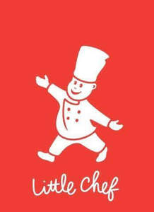

Trade Mark Journal No.2025/014 4 April 2025
UK00004161772 18 February 2025 (16,21,24,25,29,30,32,35,41,43)

- Class 16
- Printed matter; books; cookery books; booklets; pamphlets; magazines [periodicals]; printed publications; bookbinding material; paper; cardboard; signboards of paper or cardboard; photographs; calendars; posters; catalogues; stationery; instructional and teaching material (except apparatus); plastic materials for packaging; paper serviettes; tissues.
- Class 21
- Household or kitchen utensils and containers; tableware, cookware and containers; cooking utensils; cooking dishes; cooking pots; cookie jars; bread baskets; cutting boards; plates; disposable table plates; boxes for dispensing paper serviettes; combs and sponges; brushes (except paintbrushes); brush-making materials; articles for cleaning purposes; steelwool; unworked or semi-worked glass (except glass used in building); glassware, porcelain and earthenware not included in other classes; microwave cooking bags.
- Class 24
- Textiles and textile goods, not included in other classes; bed covers; table covers; table linen, not of paper; tablecloths, not of paper; table runners; place mats, not of paper; serviettes of textile.
- Class 25
- Clothing; footwear; headgear; aprons; tabards.
- Class 29
- Meat, fish, poultry and game; meat extracts; products made from meat, fish, seafood, poultry and game included in class 29; black pudding; seafood products; burgers; preserved, dried and cooked fruits and vegetables; extracts of fruits and/or vegetables; fruit preserves, vegetable preserves; jellies, jams, compotes; eggs; milk and milk products; butter; margarine; frozen chips; frozen meat; frozen shellfish; frozen vegetables; frozen fish; frozen fruits; frozen cooked fish; frozen meat products; frozen vegetables, potato and fruit products; potato crisps; potato chips; potato products in the form of snack foods; prepared meals; desserts and preparations for making desserts; nuts and mixtures of nuts and dried fruits; dairy products; cheese; cheese spreads; cheese dips; yoghurt; vegetable oils and fats; edible oils and fats; pickles; food spreads; peanut butter; baked beans; soups; broth; fruit snack bars; snack foods; dips; vegetable salads; fruit salads; coleslaw; onion rings.
- Class 30
- Frozen pizzas; frozen cakes; frozen lollipops; frozen pastry; frozen pastries; frozen dough; frozen custards; frozen confectionery; frozen prepared rice; frozen dairy confections; deep frozen pasta; frozen yoghurt confections; frozen pastry stuffed with vegetables; frozen pasty stuffed with meat; prepared meals; instant meals; snack foods; snack foods made from flour, cereals and/or farinaceous substances; preparations for making instant meals and instant snack foods; preparations consisting principally of noodles, rice, spaghetti or pasta for making instant meals and for making instant snack foods; macaroni; marzipan; rice; ravioli; ribbon vermicelli; spaghetti; pasta; sandwiches; wrap [sandwich]; hot dogs [sausages in a bread roll]; sausage rolls; tapioca and sago; chutneys, sauces; ketchups; puddings; desserts; preparations for making desserts; popcorn; pancake; pâté [pastries]; pastries consisting of vegetables and meat; meat pies; pies; pizzas; pralines; coated nuts; coffee, coffee essences and coffee extracts; mixtures of coffee and chicory; chicory and chicory mixtures, all for use for substitutes for coffee; coffee; artificial coffee; tea; cocoa; preparations made principally of cocoa; flavourings, other than essential oils, for beverages; aerated beverages [with coffee, cocoa or chocolate base]; coffee-based beverages; cocoa-based beverages; tea-based beverages; chocolate beverages; chocolate; chocolate products; confectionery; sweets (candy); chewing gums; sugar; sweeteners (natural); flour and preparations made from cereals; breakfast cereals; pizzas; pasta and pasta products; bread; biscuits; pastries; cakes; pastry; cookies; tarts; ice, ice cream, water ices, frozen confections; edible ices; preparations for making ice cream and/or water ices and/or frozen confections; honey; golden syrup; preparations consisting wholly or substantially wholly of sugar, for use as substitutes for honey; syrup; treacle; molasses; flavoring syrup; preparations for making sauces; yeast; baking-powder; spices; vinegars; custard powders; salad dressings; sauces (condiments); mayonnaise; salts, seasonings, flavourings and condiments; mustard; mousses; puddings; fruit sauces; farinaceous foods; frozen yoghurt; breakfast cereals, porridge and grits.
- Class 32
- Beers; mineral and aerated waters and other non-alcoholic beverages; fruit beverages and fruit juices; table water; syrups and other preparations for making beverages.
- Class 35
- Advertising; business management; business administration; office functions; presentation of goods on communication media, for retail purposes; administrative processing of purchase orders; systemisation of information into computer databases; accounting; sponsorship search; sales promotion; on-line retail services, electronic shopping retail services, retail store services connected with the sale of food, foodstuffs, printed matter, stationery supplies, disposable paper products, cookware, tableware, food cooking equipment, non-alcoholic beverages, alcoholic beverages except beer, beer, furnishings, fabrics, clothing, footwear, headgear, clothing accessories.
- Class 41
- Education; providing of training; entertainment; sporting and cultural activities; organising competitions; cooking competitions.
- Class 43
- Services for providing food and drink; restaurant, café, cafeteria, snack bar and hotel services, bar and catering services; booking and reservation services for restaurants; motel accommodation services; hotel and motel reservation services; room rental services; temporary accommodation.
Kout Food Group K.S.C.C.
Representative: Abion UK Limited